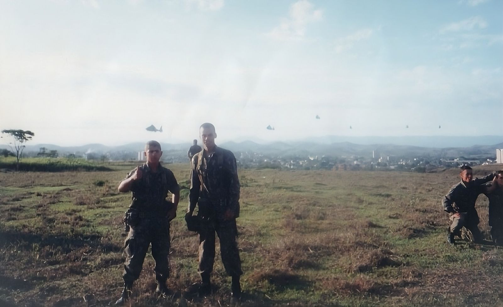
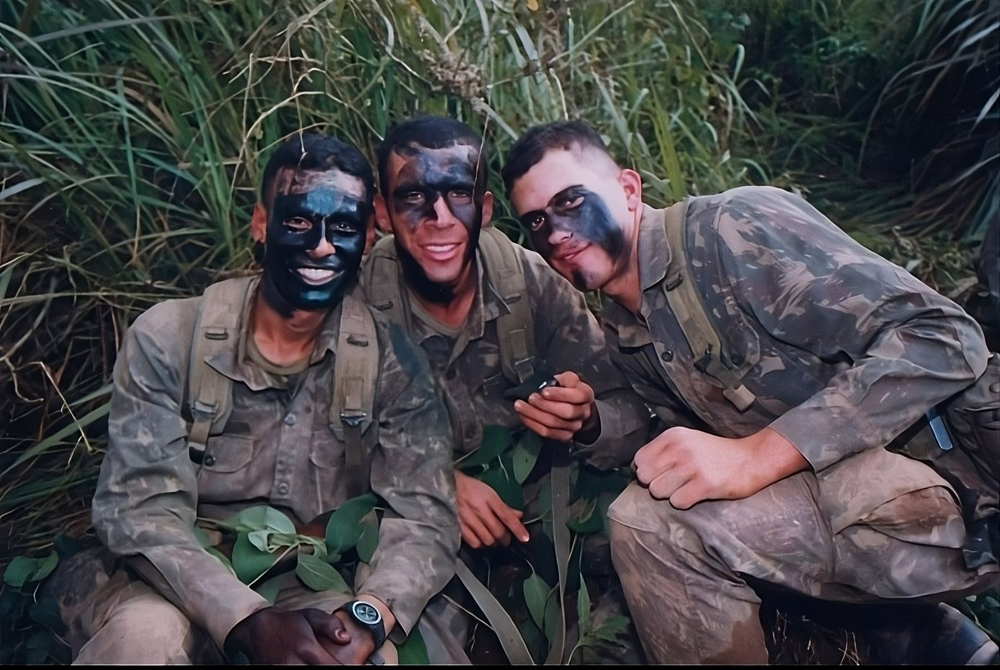
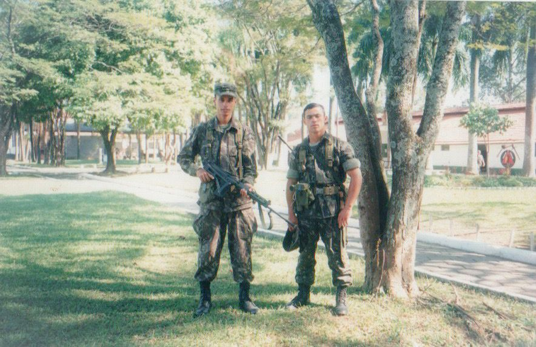
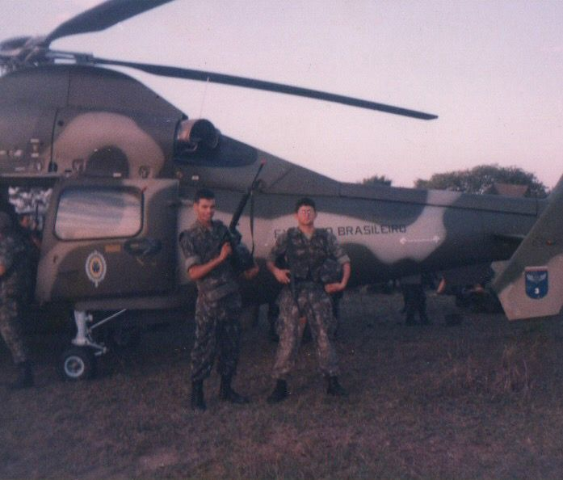
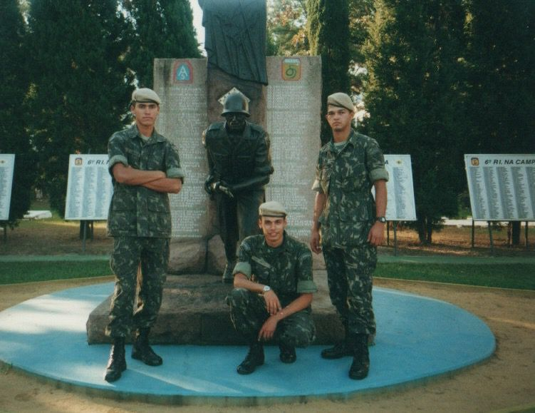

Sobre Mim
Desde minha infância eu trabalhei duro, vendia ferro, cobre e alumínio no ferro velho para obter algum dinheiro, meu sonho sempre foi mexer com computadores, gostava muito, mas não tinha condições de bancar um curso, não fui também muito ligado a estudar, nunca tive uma pessoa também na qual me cobrasse para que eu estudasse, então aos 13 anos de idade eu larguei os estudos, parei acho que na 5ª ou 7ª série, não me recordo muito bem, mas enfim larguei e como sempre gostei de atividade física eu comecei a fazer artes marciais. Foi ali onde havia me encontrado, estava fazendo Karatê, Kickboxer e Bujutso. No Karatê, e no karatê para você subir de "faixa" precisava também ser federado, eu cheguei a faixa marrom, mas como não tinha condições de me federar para pegar a faixa preta, pois o custo era bem alto e eu não tinha condições de pagar o valor e aí eu decidi seguir em frente mas não passando pela federação e consegui a faixa preta era umm dos meus sonho. Queria me tornar professor de artes marciais, já nas outras artes eu não fazia questão de ser federado.
Venci alguns campeonatos e ali estava feliz, tinha me achado e de primeiro momento eu achei que estava fazendo a coisa certa.
Aí quando eu fiz 18 anos de idade eu tive que me alistar para o serviço militar onde eu não queria entrar de jeito nenhum. Inventei milhares de coisas, mentiras somente para me livrar, de primeiro momento o pessoal da junta militar acreditou nas histórias que eu contei e pediram a confirmação e a veracidade dos fatos. Porém eu era jovem e não queria saber muito das coisas não e nem me preocupei com a tal da documentação.
Sai para festas, baladas, carnaval e etc.... Quando chegou o dia para o meu comparecimento não tinha nenhum documentos em mãos. O pessoal naquele dia já devia ter sacado que eu estava mentindo e ninguém nem se importou e disseram: Me trás depois então...
- E eu em cima da hora tentei conseguir juntar todas as documentações e também não consegui, pois o prazo era muito curto. Enfim, cheguei na hora e não tinha nada e aí me mandaram para um outro lugar para fazer uma prova e lá no dia dessa prova eu vim a descobrir que eu iria servir.
De primeiro momento foi um sensação horrível, pois tinha amigos que haviam servido o Exército e diziam que lá era o inferno literalmente....rsrs
Algum tempo depois chegando lá e morrendo de medo fui vendo como seria as coisas e realmente não era nada agradável.
Na hora de receber o seu uniforme eles perguntam qual seu número de sapato, camiseta, calça e da cabeça, para usar a boina e gorro “boné”. Só que eles te entregam propositalmente os menores ou maiores números, nunca era o seu tamanho e aí quando acabasse todo mundo de receber suas respectivas coisas eles diziam que era para a gente trocar os uniformes entre nós de acordo com o seu tamanho, já que ninguém havia pego os números certo e pensa só você fazendo isso com quase 100 pessoas, foi complicado, mas passei dessa etapa.
Tínhamos que ficar lá no chamado “internato” por 30 dias, não foi bom, mas também por outro lado lá fora eu não tinha ninguém que esperasse por mim então nessa parte foi tranquilo para mim. Se chegasse o fim de semana e a pessoa não estivesse de serviço ela poderia ir para casa na sexta-feira as 18h00 e senão estivesse de “pernoite” ou alguma punição que você recebe caso você cometa algo que seja “errado” aos olhos dos comandantes.
No primeiro dia da chamada “ordem unida” eles nos fizeram fazer tanto a posição de sentido e descansar que minhas pernas ficaram pretas literalmente de tanto bater nelas. Mas estava até que gostando daquilo, aos poucos foi mudando a minha perspectiva de como eu via aquele ambiente.
Recebíamos todos os dias centenas de instruções e uma delas era de como tirar serviço e era uma das piores coisas que tinha que se fazer no quartel.
Tivemos treinamentos com armas para poder tirar o serviço, nem imaginava, mas havia me saído super bem.
Na minha primeira vez tirando o serviço, fiquei escalado para tirar serviço onde era a garagem dos blindados mais conhecido como “tanque de guerra”. Ai naquele local havia eu próximo de uma bomba de combustível e um outro soldado na outra bomba um pouco mais acima.
Só que ao fundo do quartel havia algumas comunidades e pessoas que já conhecia o sistema do batalhão, isso geralmente é organizado por ex-militares mesmo e como já eram pessoas com más intenções sabia que por sermos novos poderíamos cometer erros e aí no meio dessa mata apareceu duas pessoas, só que a pessoa não chegava até mim, pois talvez saberia que se viesse na minha direção eu não perdoaria e iria acerta-los, mas eles faziam coisas, eles agiam de forma que me atraísse para ir atrás deles e numa dessa eu poderia ser rendido e eles me tomariam a minha arma. Mas aí eu também joguei o jogo dos caras, eu chamei o amigo “soldado” que estava acima e ficamos em linha preparados para que se eles viessem nós não hesitaríamos e iriamos atirar neles, mas aí se passaram as duas horas que tínhamos que ficar ali e quando o cabo veio para a troca, nós avisamos e falamos também como eles deveriam fazer para que não houvesse problema, mas passando-se 1 hora do nosso descanso, fomos acordados por conta de uma suposta invasão, eles atiram, acionaram o que chamamos de PDA “Plano de Defesa do Aquartelamento”. E aí depois disso ninguém mais dormiu a noite toda. Entrei milhares de outras situações que ocorreu em longo dos 5 anos de Exército.
Em 1999 quando estava de férias no exército, acabei conhecendo uma pessoa que foi muito importante na minha vida e na decisão que tomei que reflete até nos dias de hoje.
Conheci essa moça e logo de cara havia percebido que ela era uma excelente pessoa.
Eu tinha 19 para 20 anos de idade e ela tinha 17 anos, foi algo tão incrível e éramos tão parecidos, e ainda fazíamos aniversário no mesmo dia...
Aí saímos algumas vezes até o dia que ela me chamou para ir num almoço na sua casa para conhecer seus pais, aceitei o convite obviamente. Num belo dia de Domingo chego na casa dela e sou recebido por ela, seu pai, sua mãe, seu irmão e sua irmã mais nova que na época tinha 5 anos de idade.
Eles eram uma família muito séria, tinha como objetivo os estudos em primeiro lugar na vida. O irmão dela era 1 ano mais novo que eu e já estava no terceiro ano da faculdade, sua mãe era empresária, seu pai era ex-militar da “CPOR” contador aposentado e mesmo assim trabalhava como representante comercial em uma empresa de segurança pessoal.
Aí nesse momento eu já havia ficado todo sem graça, porque sabia que a qualquer momento eles iriam me perguntar onde eu parei nos estudos, e o que eu pensava em fazer quando eu fosse sair do Exército.
E enfim chegou o momento em que o pai dela me perguntou se eu já havia acabado os estudos e eu naquele momento senti tanta VERGONHA, não sabia o que dizer, a única coisa que me veio na hora foi mentir e eu simplesmente tive que menti, sobre mim e disse que estava no 2ª grau e que havia parado por conta do quartel que eu não tinha tempo para me dedicar, mas ainda assim eu estava atrasado, porque a conta não batia e eu disse que também havia repetido de ano, senti que isso não tinha sido absorvido bem pela família.
Depois desse dia virou um botão virou em minha mente e ali eu havia percebido que estudar era fundamental estudar e que quando eu era mais novo não tive isso e foi aí que escondido de todos eu me matriculei na escola novamente, fiz um acordo com o quartel para poder sair e voltar aos estudos, corri contra o tempo e terminei os meus estudos e só disse para ela que voltei quando eu cheguei no 2ªgrau e aí tive o apoio deles também e consegui concluir. Entrei na faculdade para fazer Administração de Empresas e no terceiro ano da faculdade havia percebido que não era aquilo que eu queria para minha vida e parei.
Nesse meio tempo nós terminamos também, mas graças a Deus esse botão nunca mais desvirou e aí em 2013 me formei em Designer Gráfico.
Trabalhei somente 1 vez em uma empresa e depois não consegui mais nada que se adequasse com o que eu queria e o salário não estava dos melhores.
Foi que 2022 percebi que teria que voltar a estudar e que nós nunca devemos parar de EVOLUIR, os estudos sempre enobrecem o homem. Como na minha juventude eu sempre gostei da área de computador, decidi fazer Análise em Tecnologia e Desenvolvimento de Sistemas para alavancar de vez minha carreira e realizar o meu sonho.




